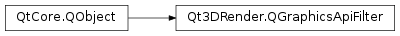

Qt3DRender.QGraphicsApiFilter¶
Synopsis¶
Functions¶
- def
api() - def
extensions() - def
majorVersion() - def
minorVersion() - def
profile() - def
vendor()
Slots¶
- def
setApi(api) - def
setExtensions(extensions) - def
setMajorVersion(majorVersion) - def
setMinorVersion(minorVersion) - def
setProfile(profile) - def
setVendor(vendor)
Signals¶
- def
apiChanged(api) - def
extensionsChanged(extensions) - def
graphicsApiFilterChanged() - def
majorVersionChanged(majorVersion) - def
minorVersionChanged(minorVersion) - def
profileChanged(profile) - def
vendorChanged(vendor)
Detailed Description¶
TheQGraphicsApiFilterclass identifies the API required for the attachedQTechnique
-
class
PySide2.Qt3DRender.Qt3DRender.QGraphicsApiFilter([parent=nullptr])¶ Parameters: parent – PySide2.QtCore.QObjectConstructs a new
QGraphicsApiFilterwith the specifiedparent.
-
PySide2.Qt3DRender.Qt3DRender.QGraphicsApiFilter.Api¶ Constant Description Qt3DRender.QGraphicsApiFilter.OpenGLES QSurfaceFormat.OpenGLESQt3DRender.QGraphicsApiFilter.OpenGL QSurfaceFormat.OpenGLQt3DRender.QGraphicsApiFilter.Vulkan Vulkan Qt3DRender.QGraphicsApiFilter.DirectX
-
PySide2.Qt3DRender.Qt3DRender.QGraphicsApiFilter.OpenGLProfile¶ This enum identifies the type of profile required.
Constant Description Qt3DRender.QGraphicsApiFilter.NoProfile QSurfaceFormat.NoProfileQt3DRender.QGraphicsApiFilter.CoreProfile QSurfaceFormat.CoreProfileQt3DRender.QGraphicsApiFilter.CompatibilityProfile QSurfaceFormat.CompatibilityProfile
-
PySide2.Qt3DRender.Qt3DRender.QGraphicsApiFilter.api()¶ Return type: PySide2.Qt3DRender.Qt3DRender::QGraphicsApiFilter.ApiSee also
PySide2.Qt3DRender.Qt3DRender::QGraphicsApiFilter.setApi()
-
PySide2.Qt3DRender.Qt3DRender.QGraphicsApiFilter.apiChanged(api)¶ Parameters: api – PySide2.Qt3DRender.Qt3DRender::QGraphicsApiFilter.Api
-
PySide2.Qt3DRender.Qt3DRender.QGraphicsApiFilter.extensions()¶ Return type: list of strings See also
PySide2.Qt3DRender.Qt3DRender::QGraphicsApiFilter.setExtensions()
-
PySide2.Qt3DRender.Qt3DRender.QGraphicsApiFilter.extensionsChanged(extensions)¶ Parameters: extensions – list of strings
-
PySide2.Qt3DRender.Qt3DRender.QGraphicsApiFilter.graphicsApiFilterChanged()¶
-
PySide2.Qt3DRender.Qt3DRender.QGraphicsApiFilter.majorVersion()¶ Return type: PySide2.QtCore.intSee also
PySide2.Qt3DRender.Qt3DRender::QGraphicsApiFilter.setMajorVersion()
-
PySide2.Qt3DRender.Qt3DRender.QGraphicsApiFilter.majorVersionChanged(majorVersion)¶ Parameters: majorVersion – PySide2.QtCore.int
-
PySide2.Qt3DRender.Qt3DRender.QGraphicsApiFilter.minorVersion()¶ Return type: PySide2.QtCore.intSee also
PySide2.Qt3DRender.Qt3DRender::QGraphicsApiFilter.setMinorVersion()
-
PySide2.Qt3DRender.Qt3DRender.QGraphicsApiFilter.minorVersionChanged(minorVersion)¶ Parameters: minorVersion – PySide2.QtCore.int
-
PySide2.Qt3DRender.Qt3DRender.QGraphicsApiFilter.profile()¶ Return type: PySide2.Qt3DRender.Qt3DRender::QGraphicsApiFilter.OpenGLProfileSee also
PySide2.Qt3DRender.Qt3DRender::QGraphicsApiFilter.setProfile()
-
PySide2.Qt3DRender.Qt3DRender.QGraphicsApiFilter.profileChanged(profile)¶ Parameters: profile – PySide2.Qt3DRender.Qt3DRender::QGraphicsApiFilter.OpenGLProfile
-
PySide2.Qt3DRender.Qt3DRender.QGraphicsApiFilter.setApi(api)¶ Parameters: api – PySide2.Qt3DRender.Qt3DRender::QGraphicsApiFilter.ApiSee also
PySide2.Qt3DRender.Qt3DRender::QGraphicsApiFilter.api()
-
PySide2.Qt3DRender.Qt3DRender.QGraphicsApiFilter.setExtensions(extensions)¶ Parameters: extensions – list of strings See also
PySide2.Qt3DRender.Qt3DRender::QGraphicsApiFilter.extensions()
-
PySide2.Qt3DRender.Qt3DRender.QGraphicsApiFilter.setMajorVersion(majorVersion)¶ Parameters: majorVersion – PySide2.QtCore.intSee also
PySide2.Qt3DRender.Qt3DRender::QGraphicsApiFilter.majorVersion()
-
PySide2.Qt3DRender.Qt3DRender.QGraphicsApiFilter.setMinorVersion(minorVersion)¶ Parameters: minorVersion – PySide2.QtCore.intSee also
PySide2.Qt3DRender.Qt3DRender::QGraphicsApiFilter.minorVersion()
-
PySide2.Qt3DRender.Qt3DRender.QGraphicsApiFilter.setProfile(profile)¶ Parameters: profile – PySide2.Qt3DRender.Qt3DRender::QGraphicsApiFilter.OpenGLProfileSee also
PySide2.Qt3DRender.Qt3DRender::QGraphicsApiFilter.profile()
-
PySide2.Qt3DRender.Qt3DRender.QGraphicsApiFilter.setVendor(vendor)¶ Parameters: vendor – unicode See also
PySide2.Qt3DRender.Qt3DRender::QGraphicsApiFilter.vendor()
-
PySide2.Qt3DRender.Qt3DRender.QGraphicsApiFilter.vendor()¶ Return type: unicode See also
PySide2.Qt3DRender.Qt3DRender::QGraphicsApiFilter.setVendor()
-
PySide2.Qt3DRender.Qt3DRender.QGraphicsApiFilter.vendorChanged(vendor)¶ Parameters: vendor – unicode
© 2018 The Qt Company Ltd. Documentation contributions included herein are the copyrights of their respective owners. The documentation provided herein is licensed under the terms of the GNU Free Documentation License version 1.3 as published by the Free Software Foundation. Qt and respective logos are trademarks of The Qt Company Ltd. in Finland and/or other countries worldwide. All other trademarks are property of their respective owners.